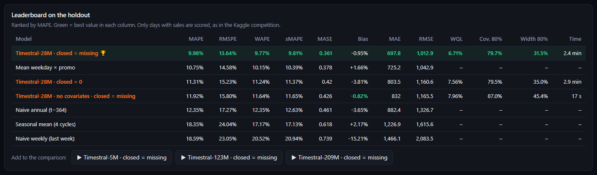
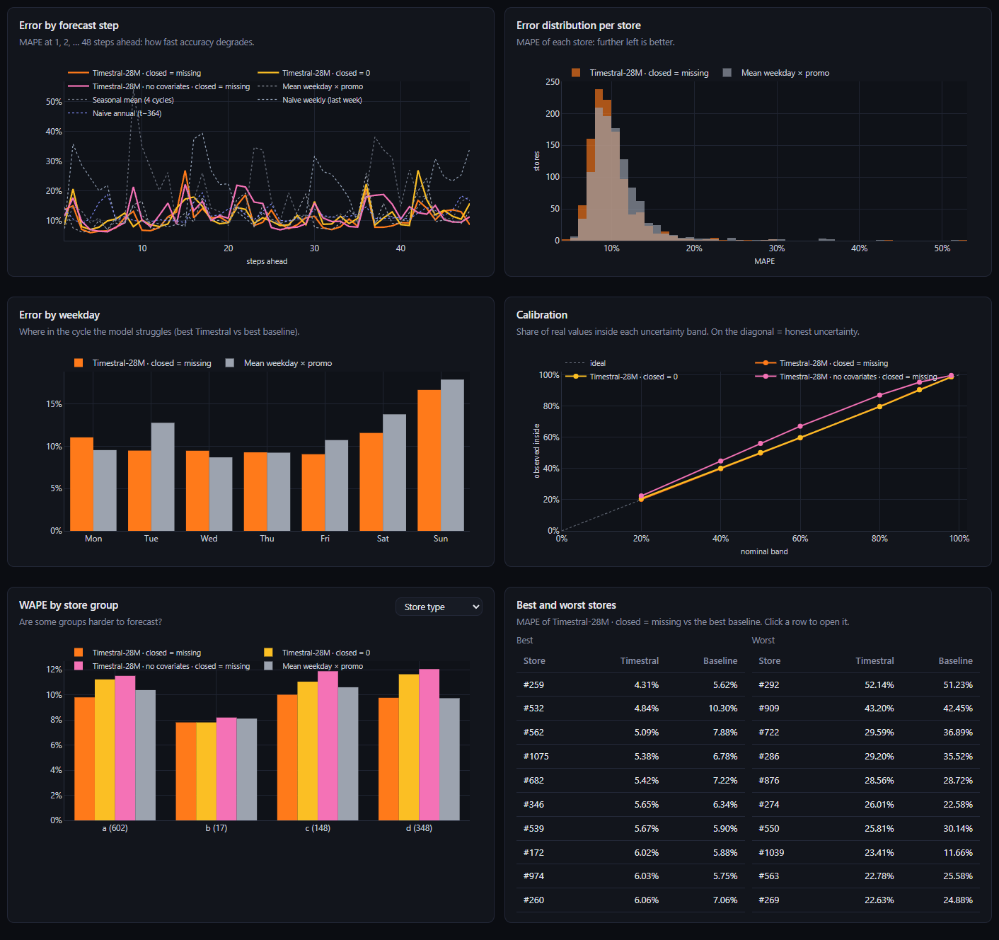
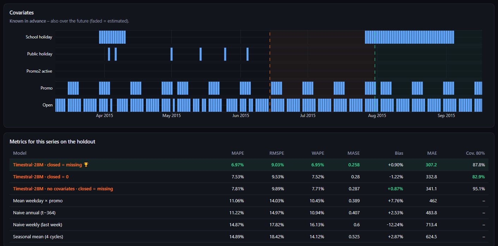
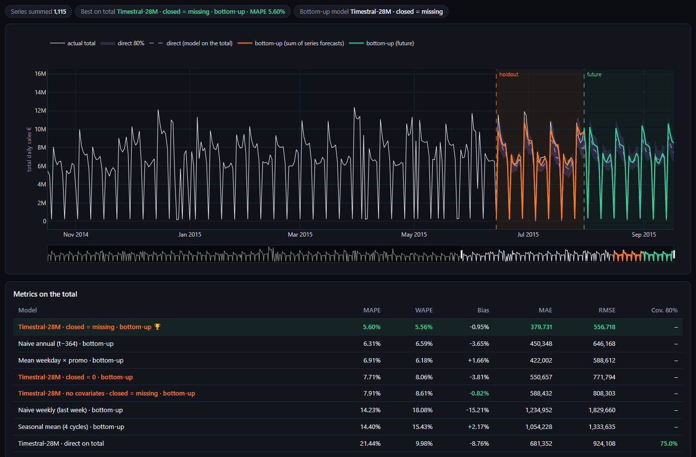
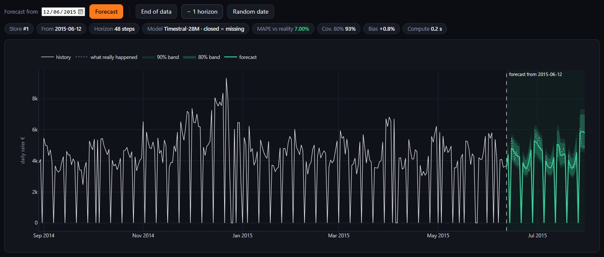
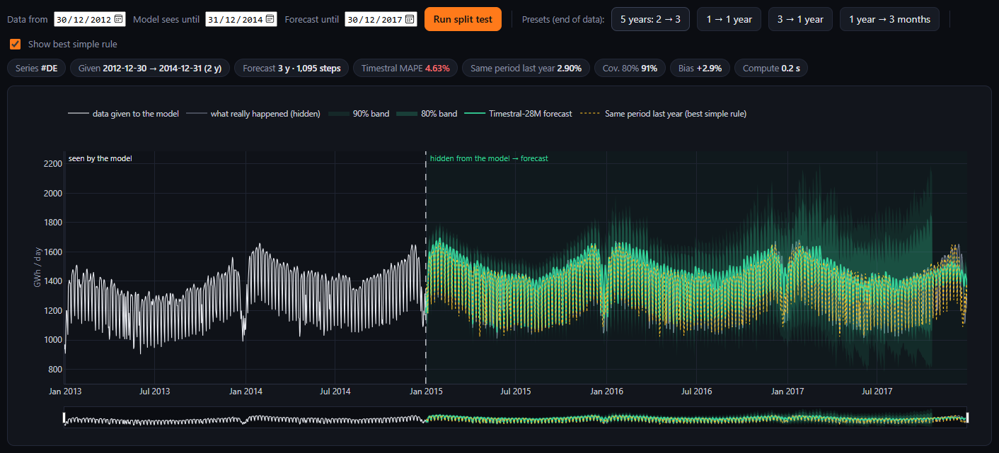
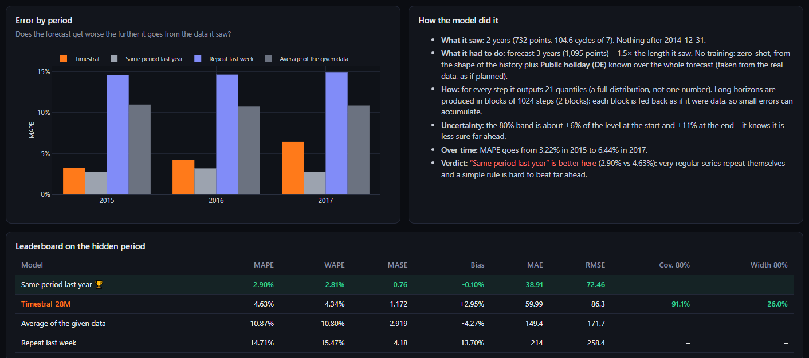
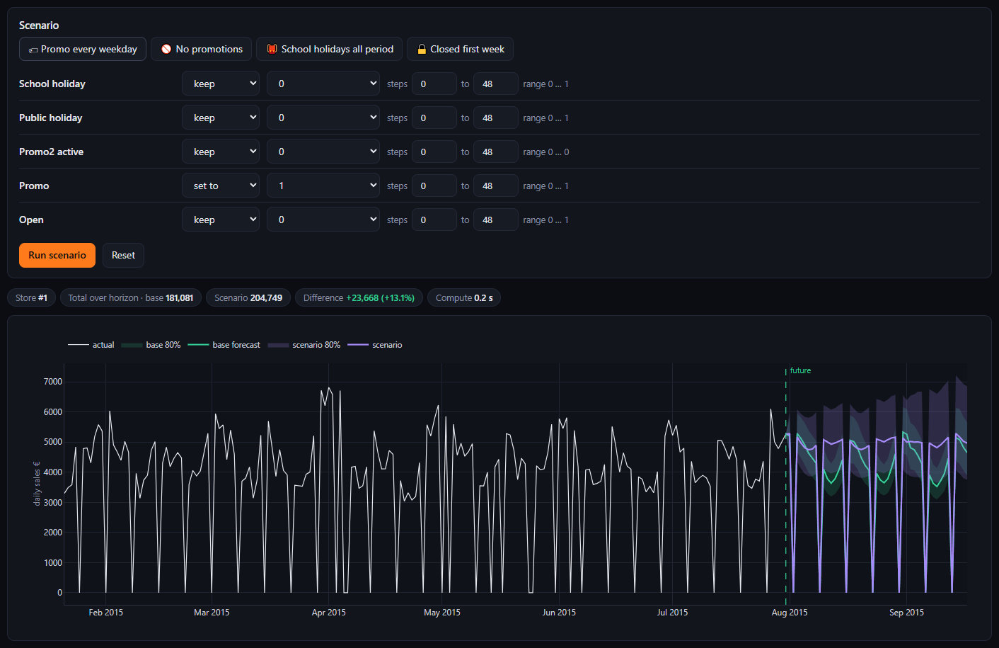
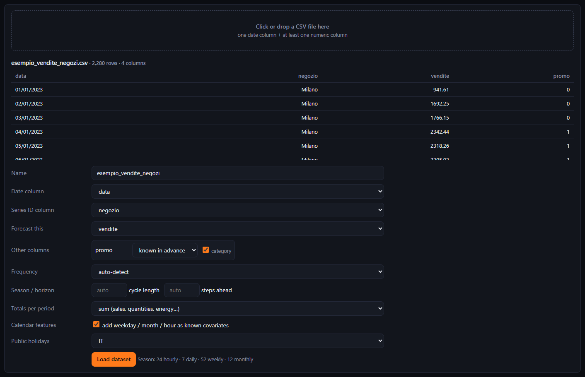

Timestral demo
how to use it, page by page
For people who are not technical and don’t speak “business jargon”. No formulas: just what you see on the screen, what it means and what you can click.
It works like a weather forecast, but for the company’s numbers. And like the weather, it doesn’t just say “20 degrees tomorrow”: it also says “almost certainly between 17 and 23”. That range is the most useful part.
🔗 How to open it
Address: http://localhost:8000/
On the demo PC itself this also works: http://localhost:8000/
🎨 The colours: one key for every chart
Every chart always uses the same colours. Once you know them, you can read every page.
🎛️ The top bar (always visible)

- The pages (the tabs): Overview, Series, Total… Click to change page. The page you are on is orange. On the right, 📘 Guida opens this guide.
- Dataset = which collection of data. There are public examples already (sales of 1,115 Rossmann stores, electricity use, bike rentals, temperatures…), and the data you upload appears here too.
- Store / Series = which store (or product, or city). It only appears when the data contains many of them.
- Arrows ◀ ▶ = previous / next store, to flip through them one at a time.
- Model = which version of the “brain”. The number (5M, 28M, 123M, 209M) is its size: bigger = usually more accurate but slower. The words after the name say how it was used: no covariates = without background information; closed = missing = closed days treated as “empty”, not as “zero sales”. Entries marked not computed have not been calculated yet: choosing one starts the calculation.
- Horizon = how many days (or hours, or months) into the future to forecast. Changing it redoes the calculations.
- Context = how much of the past the model reads (0 = all of it). Usually there is no need to touch it.
- Yellow pill ⏳ = a calculation is running in the background: it shows the percentage and the minutes left. Pages update by themselves when it finishes.
📊 Overview – “does the model work?”
When to use it: first, to get the answer in 30 seconds.
Top: the summary and the 6 key numbers

- The summary sentence: which dates the model saw, which period was hidden (Holdout), how far the future forecast goes and which version did best.
- Notes on how the data is handled (e.g. gaps in the data, closed days).
- Average error (MAPE): how wrong it is on average, as a percentage. 9.98% = on a day worth €1,000 it is off by about €100 on average. Underneath, in green, how much better it is than the best simple rule.
- A second way to measure error (RMSPE, the one used in the Kaggle competition): it punishes big mistakes more. Lower = better.
- Error on total volume (WAPE): all the errors added up, divided by total sales. It is the “how wrong was I on turnover” view.
- How reliable the band is (Coverage of the 80% band): how often the real value fell inside the band. It should be close to 80%: much less = the model is over-confident; much more = it is too cautious.
- Error on the total (e.g. the whole chain): when all stores are added up, the errors partly cancel out, so it is lower.
- Calculation time on this ordinary PC, without a graphics card.
Middle: the leaderboard

- The winner 🏆 (highlighted row). Orange rows are Timestral, the others are the simple rules.
- A simple rule, for example Mean weekday × promo = “average of the same weekday, with or without a promotion”. They show whether the model adds value.
- The columns are different ways of measuring error: for almost all of them lower = better. Each one is explained in Difficult words.
- Green number = the best in that column.
- Add to the comparison: click a ▶ button to calculate another version of the model (e.g. the bigger 209M). It runs in the background; the yellow pill at the top shows progress.
Bottom: where it goes wrong

- Error by step: how wrong it is forecasting 1 day ahead, 2 days, … up to the last one. Usually, the further ahead, the bigger the error.
- Distribution per store: each bar counts how many stores have that error. The further left the orange “mountain” sits, the better.
- Error by weekday: for example, Sunday is harder.
- Calibration: checks whether the bands are honest. If the orange line sits on the dashed diagonal, “80%” really means 80%.
- Error by group (e.g. store type). Choose the grouping from the menu on the right.
- Best and worst stores. Click a row to open that store in the Series page.
🏪 Series – one store at a time
When to use it: to show someone a concrete example (“look at store 1”). Change store with the ◀ ▶ arrows at the top.

- Show baseline = show the simple rule (grey dashed line) to compare it with the model.
- All / Last year = show the whole history or only the last year.
- Backtest + future = zoom on the interesting part: the test on the past and the future (recommended view).
- Forecast CSV = download the forecast as a file that opens in Excel (date, forecast value, low and high end of the band).
- The labels: store number, characteristics (type, assortment, distance to the nearest competitor…), error on this store and reliability of the band.
- The key to the chart colours. Click an entry to hide or show it.
- Orange zone = the period hidden from the model. White line = what really happened; orange line = what it had predicted. The closer they are, the better.
- Green zone = the predicted future, with the dark band (8 times out of 10) and the lighter one (9 times out of 10).
- Mini-map: drag its edges to choose the period to look at.

- The background information (Covariates) given to the model: school holidays, public holidays, promotions, opening days… These are things known in advance (you already know when you will run a promo or close). Blue bars mark the “yes” days; faded ones are estimated.
- This store’s report card: the same measures as the Overview, just for this store.
➕ Total – the whole chain together

- Two ways to forecast the total: bottom-up (orange/green) = forecast every store and then add them up; direct (purple dashed) = forecast the total directly.
- Orange zone = hidden period, to compare with reality (white line).
- Leaderboard on the total: who makes the smallest error on the chain total.
⏪ Explore backtest – the time machine
When to use it: to show “live” how the model reasons. It is the most impressive page in a presentation.

- Frames = how many “todays” to prepare (20, 40, 80). More frames = smoother movement, but a longer calculation.
- Look-back = how far back the time travel starts (auto is fine).
- Compute = prepare the time machine (a few seconds). Press it once.
- Reveal hidden data = also show what really happened after “today” (grey dotted line), to check.
- Follow “today” = the chart follows the chosen day instead of showing the whole period.
- Speed = playback speed.
- ▶ Play / ❚❚ Pause: makes time move.
- Slider: drag it to choose the “today” yourself. The date is shown on the right.
- Error for each “today”: a tall bar = that time it was more wrong. Click a bar to jump to that day.
⚡ Live forecast – a forecast on the spot

- Forecast from = which day to start from (empty = from the last available day, i.e. the real future).
- Forecast = calculate.
- End of data = forecast the real future, from the last existing data point.
- − 1 horizon = go back one period (e.g. 48 days) and try again: handy for many tests in a row.
- Random date = a random date: good for showing it isn’t “rigged” on a hand-picked day.
- The result: error against reality, reliability of the band and Bias (+ = forecast too high, − = too low).
- White dashed line = the day the forecast starts from. On the right: green = forecast; grey dotted = what really happened.
✂️ Split test – “here are 2 years, guess the other 3”
When to use it: to find out how far ahead you can trust it (1 month? 1 year? 3 years?). It works best with long data: try Germany electricity or Melbourne temperature, or your own.

- Data from = where the data to use starts.
- Model sees until = up to when the model may look. Everything after this date is hidden.
- Forecast until = how far it must forecast.
- Run split test = start the test with the chosen dates.
- Shortcuts: 5 years: 2 → 3 fills in the dates for you (5 years, 2 seen, 3 to forecast). There are also 1→1, 3→1 and 1 year → 3 months.
- Show best simple rule = show/hide the best simple rule (yellow dotted line).
- The summary: how much it saw, how much it forecast, its error (red if a simple rule did better) and that of the best rule.
- The cut line: on the left (white) what the model saw, on the right the forecast (green) over reality (grey).

- Error year by year: does the orange bar (Timestral) grow as it moves away? Then the further ahead it looks, the less precise it is: that is normal.
- “How the model did it” in plain words: how much it saw, how much it had to forecast, how it widens the margin over time, and the final verdict.
- The leaderboard on the hidden period: who made the smallest error.

- Model error month by month: green = under 5%, red = over 15%. “+” = it forecast more than reality, “−” = less.
- Simple rule error in the same month, for comparison.
🎚️ What-if – “what would happen if…?”
When to use it: “if we run the promo every week, how much more do we sell?”, “if we close the first week, how much do we lose?”.

- Ready-made scenarios: one click and it runs (e.g. “promo every weekday”, “no promotions”, “closed the first week”).
- What to do with this information: keep = leave it as it is; set to = set a value; shift by = add/subtract (e.g. +5 degrees); scale × = multiply (e.g. ×1.2 = +20%).
- The value: for yes/no, 1 = yes and 0 = no.
- Which days: from “step” to “step”, counting from the first forecast day (0 = the first day, 7 = one week later).
- Run scenario = calculate the scenario with your choices.
- Reset = back to the normal situation.
- The result in numbers: normal forecast total, total with the scenario and the difference (in value and in %).
- Key: green = base, purple = scenario. Under the chart you also see which information you changed.
🚨 Anomalies – the strange days

- Window length = length of each small forecast (e.g. 7 days).
- Windows = how many to make going backwards (20 × 7 days = about 5 months checked).
- Band = how strict to be. 98% = only flags things that are really out of the ordinary; 90% = more sensitive, flags more.
- Detect anomalies = start the search.
- The summary: how many strange days, and the percentage outside the band compared with what is “normal by chance” (about 2% with the 98% band).
- Red dot = an anomalous day; the bigger it is, the stranger the day.
- The list, strangest first: date, real value, expected value, the band, and whether it was above ▲ or below ▼.
📤 Your data – trying it with our own numbers
How to prepare the file (in Excel)

- Drag the file here or click to choose it.
- Preview: the first rows, to check it is the right file.
- Name = the name it will have in the Dataset menu.
- Date column = which column is the date (it usually finds it by itself).
- Series ID column = which column says who the row belongs to (store, product). Leave “single series” if the file has only one line of numbers.
- Forecast this = the number to forecast.
- The other columns: ignore = don’t use it; past only = only known afterwards (e.g. customers who came in); known in advance = known beforehand (promo, opening days, list price). category = it is a yes/no or a code, not a quantity.
- Frequency = how often there is a data point (daily, weekly, monthly…). auto-detect = it works it out by itself.
- Season / horizon = length of the cycle (7 = a week for daily data) and how many steps to forecast. Leaving auto is perfectly fine.
- Totals per period = for monthly summaries: sum (sales, units) or average (prices, temperatures).
- Calendar features = automatically adds weekday and month as known information. Leave it on.
- Public holidays = adds the public holidays of the chosen country (IT = Italy).
- Load dataset = load it. The Overview opens: the yellow pill shows the calculation in progress (seconds for a few stores, minutes for hundreds).
🗺️ Guided paths: “I want to…”
✅ …find out in 2 minutes whether it works
🏪 …show a store to a colleague
🎬 …give a “live” demonstration
✂️ …run the “2 years seen, 3 to guess” test
🏷️ …find out what a promotion is worth
📤 …try it with our own data
🚨 …find unusual days
📖 Difficult words, explained simply
| Forecast | A prediction of future numbers. |
| Holdout / backtest | The period hidden from the model to test it – like a school test where the teacher already knows the answers. |
| Baseline | A simple rule used as a yardstick (e.g. “same as last week”, “same day last year”). |
| MAPE | Average error as a percentage, day by day. 10% = on average it is off by a tenth. Lower = better. |
| WAPE | Error on total volume: how wrong I was overall compared with how much I sold overall. Lower = better. |
| RMSPE | Like MAPE but weighs big mistakes more (it is the measure of the Kaggle Rossmann competition). |
| sMAPE | A “symmetric” version of MAPE. Lower = better. |
| MASE | Comparison with the rule “repeat the last cycle”: below 1 = better than the rule, above 1 = worse. |
| MAE / RMSE | Average error in the units of the data (e.g. euros per day). RMSE weighs big mistakes more. |
| Bias | Tendency: + = always forecasts a bit too much; − = always a bit too little. Close to 0 = balanced. |
| Coverage 80% (Cov. 80%) | How often the real value fell inside the band. Ideal ≈ 80%. |
| Width 80% | How wide the band is compared with the values: narrow = precise, wide = cautious. |
| WQL | A grade for the whole band, not just the middle line. Lower = better. |
| Covariates | Background information given to the model: promos, opening days, holidays, weather… |
| Known in advance | Information known beforehand (the promo calendar, planned closures). |
| Past only | Information only known afterwards (e.g. customers who came in yesterday). |
| Closed = missing / = 0 | How to treat closed days: as “empty” (recommended) or as “zero sales”. |
| Bottom-up / direct | Total obtained by adding up the forecasts of each store / by forecasting the total directly. |
| Horizon | How far ahead to forecast. |
| Context | How much of the past the model reads. |
| Zero-shot | The model is not “trained” on your data: it reads it and forecasts straight away, like an expert seeing a chart for the first time. |
| 5M · 28M · 123M · 209M | Size of the model (millions of “parameters”). Bigger = usually more accurate, but slower. |
🛟 If something goes wrong
| The page doesn’t open | Is the demo PC on and the program running? On the demo PC, run avvia_ui.ps1. |
| It asks for a username and password | That is normal: the site is protected. If the password is rejected, ask again whoever runs the demo (it is in the file accesso_demo.json on the demo PC). |
| “Timestral is evaluating…” | It is the first calculation for that data: wait, the yellow pill at the top shows the minutes left. Afterwards it is saved and the next time is instant. |
| A button does nothing | Check whether a red box with an error message appears at the bottom right; it often says what to fix (e.g. “too many steps”). |
| The 209M model is very slow | That is normal on this PC without a graphics card: for 1,115 stores it takes about 20–25 minutes. For tests, use 28M. |
| My file isn’t read properly | Check there is a single header row, the date in a single column and numbers without symbols (no “€”). |
| My data has disappeared | After the program restarts, uploaded files must be uploaded again (by design: they are not saved to disk). |